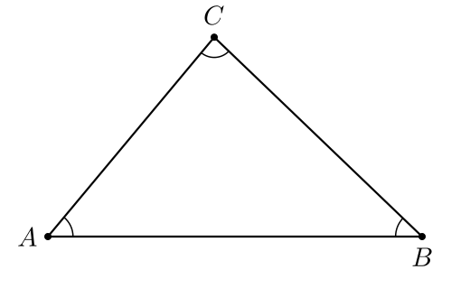
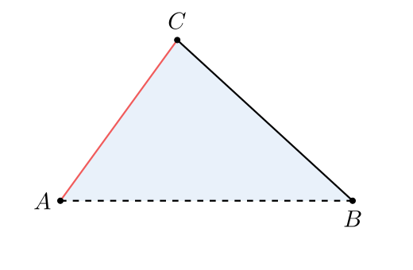

§1 · Что такое AnimaGeo
AnimaGeo — Python-библиотека, которая переводит геометрические конструкции
(написанные в Python-DSL или импортированные из .ggb) в SVG и
MP4-анимации типографского качества. Ядро — поверх
manim community, но весь
пользовательский слой — про геометрию: Point,
Polygon, Angle, а не про
Mobject/Animation.
Что решает AnimaGeo
Типичный сценарий — у вас есть .ggb-файл из GeoGebra
(учитель, методист, автор учебника) и нужен из него качественный SVG
для статьи или MP4 для урока. Ручной перевод в manim — долго и хрупко:
каждая точка, сегмент, угол требует отдельного Mobject,
стили копируются вручную, подписи накладываются друг на друга.
AnimaGeo делает две вещи:
- Читает
.ggb-файл (или Python-DSL, если вам не нужен GeoGebra) → строит Construction — ориентированный граф геометрических зависимостей. - Рендерит Construction в SVG (через Cairo) или MP4 (через manim) с применением JSON-стилей, ImportPolicy-правил и автораскладки подписей.
Пайплайн

.ggb до SVG/MP4. Стили применяются в applyStyle поверх распарсенной конструкции.| Шаг | Код | Что делает |
|---|---|---|
| 1. Parse | parsers/ggb_parser.py или parsers/dsl/ | XML из .ggb или Python-DSL (exec-движок) → список команд и сырых стилей (elem.ggb_raw) |
| 2. Build | geo/construction.py | Топологическая сортировка, ленивое построение: Point → Segment → Angle → … |
| 3. Style | applyStyle + ImportPolicy | JSON-правила → elem.style. Политики решают, как конвертировать GGB-значения. |
| 4. Render | CreateMObject + exportSVG / manim | Элементы → manim Mobject → Cairo (SVG) или manim-рендерер (MP4) |
Во что выводит
Из одной конструкции AnimaGeo получает три рода вывода:
| Дорожка | Форматы | Когда |
|---|---|---|
| Статический вектор | SVG · PDF · EPS · TikZ | книги, статьи, печать, LaTeX |
| Render | PNG · GIF · MP4 · WebM · MOV | обучающие видео, анимированные доказательства |
| Интерактивный web | JSXGraph (живой SVG) | подвижные чертежи на сайте: тяни точки/слайдеры |
Статика и render разбираются в §9 · Экспорт, интерактивные подвижные чертежи — в §10 · Веб-экспорт.
Hello World
Самая короткая программа — треугольник с подписями и углами. Попробуйте
поменять координаты или удалить beta, нажмите Run.
A = Point(-4.5, -2)
B = Point(4.5, -2)
C = Point(-0.5, 2.8)
p, a, b, c = Polygon(A, B, C)
alpha = Angle(B, A, C)
beta = Angle(C, B, A)
gamma = Angle(A, C, B)
style(A, B, C, label_visible=True)
alpha.style.label_text = r'$\alpha$'
beta.style.label_text = r'$\beta$'
gamma.style.label_text = r'$\gamma$'
Ключевые моменты:
Point(x, y)— входная точка в декартовых координатах сцены.Polygon(A, B, C)возвращает кортеж из полигона и трёх сегментов — AB, BC, CA. Это не туда-сюда как в GeoGebra; порядок фиксирован.Angle(B, A, C)— угол при вершине A, между лучами AB и AC. Порядок важен: при CCW-ориентацииAngle(A, B, C)даёт reflex-сектор (>180°).- Все переменные (
alpha,p,a…) — имена в Construction, по которым к ним можно обращаться черезscene.element(name).
Меняем стили на лету
Тот же треугольник, но с явными overrides через elem.style. Любой
элемент сцены имеет словарь style, в который можно положить
'stroke', 'fill', 'stroke_width_px',
'stroke_dash_ratio' и ещё десяток ключей.
A = Point(-4, -1.8)
B = Point(4, -1.8)
C = Point(-0.8, 2.6)
p, a, b, c = Polygon(A, B, C)
style(A, B, C, label_visible=True)
p.style.fill = '#d6e5f6'
p.style.fill_opacity = 0.55
p.style.stroke = '#4d87c6'
p.style.stroke_width_px = 2.0
a.style.stroke_dash_ratio = 0.5
c.style.stroke = '#f15b5b'
В собственном скрипте (не в интерактиве) то же самое пишется напрямую в
elem.style — после putCode:
scene.putCode("""
A = Point(-4, -1.8)
B = Point(4, -1.8)
C = Point(-0.8, 2.6)
p, a, b, c = Polygon(A, B, C)
""")
scene.element('p').style['fill'] = '#d6e5f6'
scene.element('p').style['fill_opacity'] = 0.55
scene.element('p').style['stroke'] = '#4d87c6'
scene.element('p').style['stroke_width_px'] = 2.0
scene.element('a').style['stroke_dash_ratio'] = 0.5
scene.element('c').style['stroke'] = '#f15b5b'putCode принимает только геометрические
конструкторы — Point, Segment, Polygon и
т.д. Присваивания вида elem.style[...] = ... — обычный Python,
пишутся после putCode(), через scene.element(name).
В интерактивных примерах гайда стили передаются через data-example.overrides.
Подписи и автораскладка
В AnimaGeo подписи — не часть элемента, а отдельный Tex,
размещённый рядом. Положение задаётся парой: якорь (9-точечная сетка TL/TC/TR…BR)
и pixel-offset. Проблема: если подписей много, они перекрывают геометрию.
Решение — scene.autoPlaceLabels(): жадный решатель, 8 кандидатов на
каждую подпись, приоритет по степени свободы.
A = Point(-2, 1.5)
B = Point(2, 1.5)
C = Point(0, -1.5)
s1 = Segment(A, C)
s2 = Segment(B, C)
s3 = Segment(A, B)
M = Midpoint(A, B)
D = Midpoint(A, C)
E = Midpoint(B, C)
style(A, B, C, D, E, M, label_visible=True)
Включение авто-раскладки описано в JSON-стиле под ключом
overlay.label_placement — либо вызовом
scene.autoPlaceLabels() напрямую. Полное описание — §6.
Что дальше
Следующие разделы гайда раскроют каждый шаг пайплайна подробнее:
- §2 — установка: Python, manim, Cairo, первый запуск, рендер-сервер.
- §3 — полный Python-DSL: все конструкторы и 150+ команд (
Midpoint,Intersect,AngularBisector,Tangent…). - §4 — импорт из GeoGebra:
loadGGB,ImportPolicyсо своим mini-DSL для конвертации значений. - §5 — стили: JSON-схема, палитры, per-type/per-name overrides, rendering-флаги, scaling-константы.
- §7 — кривые:
Conic,Function,ImplicitCurveс адаптивным sampler'ом и marching squares. - §8 — анимации: keyframes,
addUpdater, EMA-смягчение.